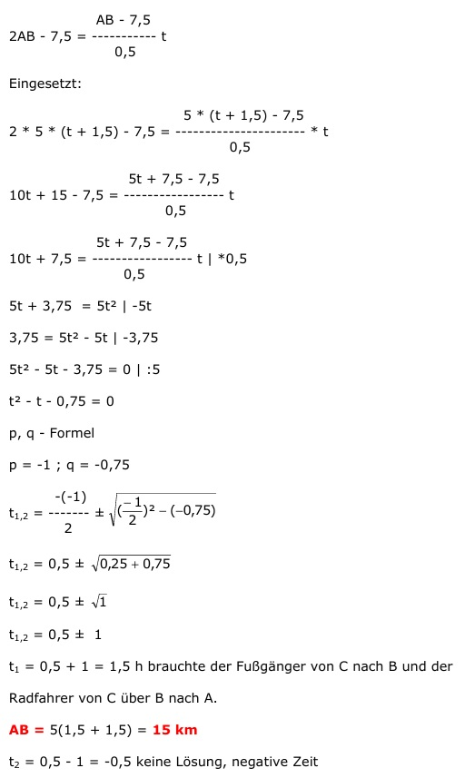

Aufgabe 157 Treffpunkt sei C Der Fußgänger F legt in 1,5 h bei einer Geschwindigkeit von 5 km/h s = v * t = 5 km/h * 1,5 h = 7,5 km zurück = Strecke AC Für CB = AB - 7,5 km braucht der Fußgänger t Stunden Der Fußgänger braucht für die Gesamtstrecke (t + 1,5) Stunden Für die Strecke AB – 7,5 km braucht der Radfahrer 30 min oder 0,5 h Der Radfahrer R hat eine Geschwindigkeit von AB - 7,5 km vR = -------------- 0,5 h Der Radfahrer braucht von C aus für die Strecke AB + (AB - 7,5) km t Stunden, so lange wie der Fußgänger von C nach B. s = v * t Fußgänger: Für die Gesamtstrecke gilt: AB = 5 * (t + 1,5) Radfahrer: Für die Gesamtstrecke gilt: AB - 7,5 AB + (AB - 7,5) = ----------- * t 0,5 AB - 7,5 2AB - 7,5 = ---------- t 0,5 Eingesetzt: 5 * (t+1,5) - 7,5 2 * 5 * (t + 1,5) - 7,5 = ------------------- * t 0,5 5t + 7,5 - 7,5 10t + 15 - 7,5 = ---------------- t 0,5 5t + 7,5 - 7,5 10t + 7,5 = ---------------- t |*0,5 0,5 5t + 3,75 = 5t2 |-5t 3,75 = 5t2 - 5t |-3,75 5t2 - 5t - 3,75 = 0 |:5 t2 - t - 0,75 = 0 p, q - Formel p = -1 ; q = -0,75  t1,2 = 0,5 ± 1 t1 = 0,5 + 1 = 1,5 h brauchte der Fußgänger von C nach B und der Radfahrer von C über B nach A. AB = 5(1,5 + 1,5) = 15 km t2 = 0,5 - 1 = -0,5 keine Lösung, negative Zeit